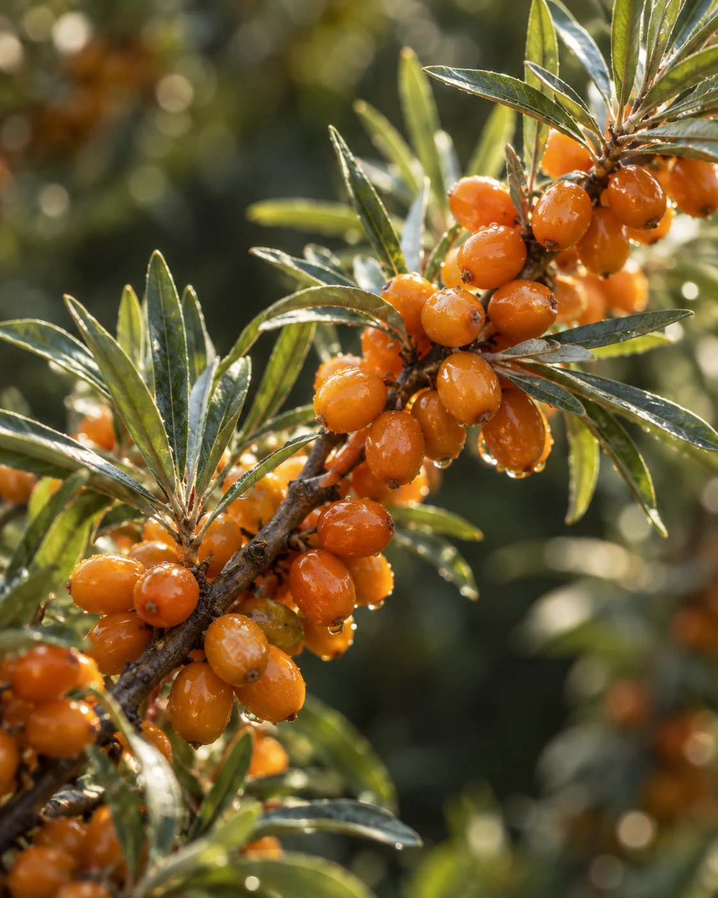
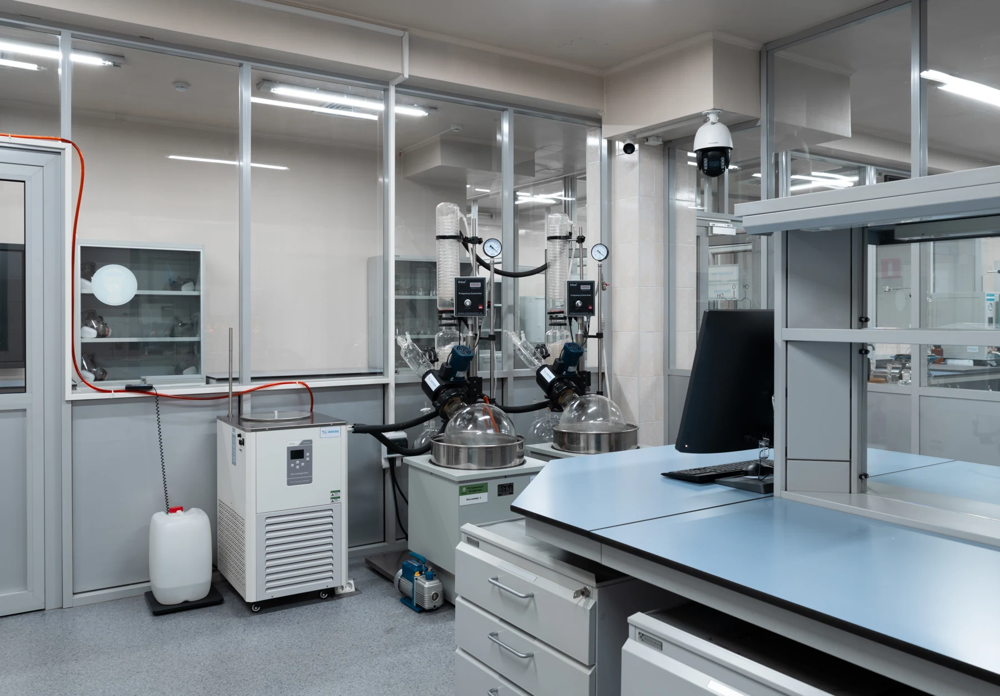
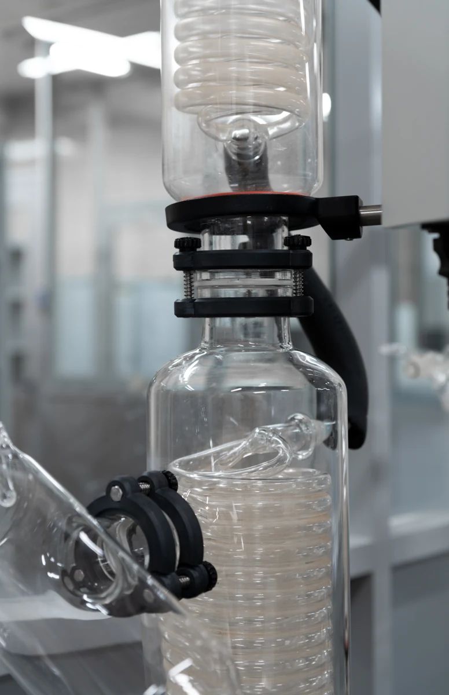

ankor RENOVA
60 капсулЛипофильный концентрат облепихи
ТОМ К-90® в капсулах.
41 810 ₸
Мы раскрываем потенциал растений,
чтобы забота о себе стала естественной
частью вашей жизни.
35 лет исследовательского опытав каждой формуле Ankor

Природныекомпоненты
Собственнаятехнология ТОМ К-90®
Разработанов Казахстане
Удобный форматна каждый день
Забота начинается с малого
Четыре продукта. Одна философия:
сохранить ценное, сделать удобным.
Липофильный концентрат облепихи
ТОМ К-90® в капсулах.
Обезжиренные плоды облепихи
и шиповник из гор Кыргызстана.
Концентрат облепихи ТОМ К-90®.
Омега-7, янтарная кислота, витамины E и K.
Липофильный концентрат чёрного тмина.
Природный комплекс в капсулах.

Маленькая ягода. Большая история.
Наша задача — бережно
сохранить её ценность.
В основе линейки RENOVA — липофильный концентрат облепихи ТОМ К-90®. Наш подход — работать с комплексом природных компонентов и бережно сохранять ценность растительного сырья.
Природные жирные кислоты облепихи
Полифенолы, каротиноиды и витамины
От исследования к производству
История начинается с работ химика А. Е. Колокольникова в Алматы. Сегодня мы развиваем технологию получения природных концентратов в собственной научно-производственной лаборатории.
1980-е
Первые работы с органическими концентратами ягод.
1990
Участие в государственной программе по разработке концентрата облепихи.
2023
Открытие научно-производственной лаборатории в Алматы.
2025
Выпуск продуктов ankor RENOVA и ankor DETOX.
Место, где природа встречается с наукой
Научно-производственная лаборатория открылась в 2023 году. Здесь мы развиваем технологии получения растительных концентратов и готовим их к производству.


Работаем с природным сырьём и совершенствуем способы получения липофильных концентратов. В основе производства — экстрактор собственной разработки.
Растительные материалы проходят фитосанитарный и лабораторный контроль, включая проверку на пестициды, гербициды и тяжёлые металлы.
Давайте разберёмся
Забота о себе начинается
с осознанного выбора.
RENOVA и RENOVA+ основаны на концентрате облепихи ТОМ К-90®. На этикетке RENOVA+ отдельно выделены омега-7, янтарная кислота, β-каротин, витамины E и K. NIGELLA S. — концентрат чёрного тмина в капсулах. DETOX — облепиха и шиповник в саше для приготовления напитка. Составы и форматы можно сравнить перед выбором.
Это липофильный концентрат облепихи — основа RENOVA. «Липофильный» означает, что концентрат объединяет жирорастворимые компоненты ягоды. В его природный состав входят жирные кислоты омега-3, 6, 7 и 9, каротиноиды и полифенолы. Технология разрабатывалась в Казахстане на протяжении более 35 лет.
Для производства используют ягодное сырьё, которое проходит фитосанитарный и лабораторный контроль, в том числе проверку на пестициды, гербициды и тяжёлые металлы. Этот этап предшествует получению концентрата и выпуску готовой продукции.
Ознакомьтесь с составом и инструкцией на упаковке. Индивидуальные рекомендации по приёму и совместимости с другими средствами стоит обсудить с врачом. Наша команда поможет с вопросами о продукции.
Условия хранения зависят от продукта. Следуйте указаниям на упаковке и храните её в недоступном для детей месте. Подробную информацию о RENOVA и DETOX можно найти на страницах продуктов.
Добавьте продукты в корзину и нажмите «Заказать в WhatsApp». Список товаров, количество и сумма подставятся в сообщение. Отправьте его менеджеру, чтобы подтвердить наличие, оплату и доставку.
Доставка и оплата